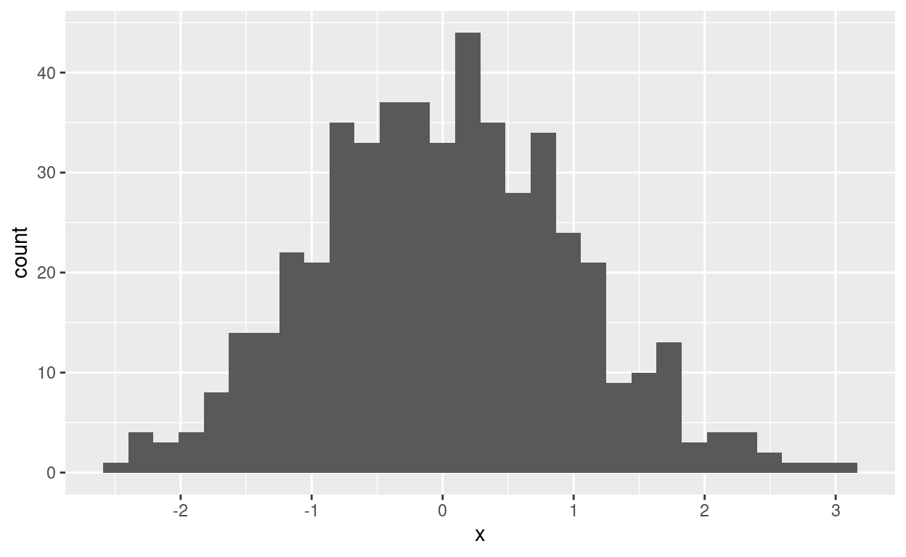

I think this should be one of my posts that develops. The says it all really.
Sausages

Text and figures are licensed under Creative Commons Attribution CC BY-SA 4.0. The figures that have been reused from other sources don't fall under this license and can be recognized by a note in their caption: "Figure from ...".